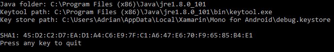

Duration
5 minutes
Lab goals
In this exercise, we will create a new Android application and then locate the debug keystore used to sign it. We will record the SHA1 fingerprint so we can use it to identify the application with Google Play services.
To complete this exercise, you will perform the following steps:
- Create a new Android project (DroidMapping)
- Retrieve the SHA1 fingerprint of the keystore that is used to sign the application.
Required Assets
There is a Exercise 1 folder included with this lab exercise which contains a completed project to compare your work against.
Steps
This is a group exercise, intended to be done in a live class, if you are working through this on your own, you can use the step-by-step instructions below. You can also utilize the high-level goals defined above to work through the code, relying on the below instructions to fill in any necessary details.
Create the Android application
First, we need to create our mapping application. The debug keystore is not created until you build and deploy the application - this is when it is signed.
-
Create a new Xamarin.Android application: choose Android > Android App on Visual Studio for Mac or Visual C# > Android > Blank App (Android) for Visual Studio 2017. Name your new app DroidMapping.

First, let's remove any boilerplate UI which is added to the application.
-
Open MainActivity.cs and remove the
Buttonand tap-counting click handler assignment. (This sample code may not be present, depending on the project template you chose.) - Additionally, open Main.axml in Resources\layout\ and remove the Button there as well. We will eventually add some mapping UI to this project. (Again, this sample XML may not be present, depending on the project template you chose.)
- Build and deploy the application to your device or emulator. It should just present a blank screen.
Get the SHA1 fingerprint
Next, we are going to get the SH1 fingerprint from our debug keystore used to sign all debug applicaitons. We will need to register this fingerprint with the Google API console in order to identify our apps and access the mapping services.
There's a command line project that will attempt to find the SHA1 for the debug keystore in the SHA1Extractor folder. You can run this tool on MacOS or Windows to get the SHA1 fingerprint which you'll use in the next exercise.

If you run into issues, you can find the fingerprint manually by following the steps below.
- To request a Maps API key from Google, you need to know the SHA1 fingerprint of the keystore that is used to sign the application. This means that you will have to determine the SHA1 fingerprint for the debug keystore, and then the SHA1 fingerprint for the keystore that is used to sign your application for release. By default the keystore that is used to sign debug versions of a Xamarin.Android application can be found at the following locations:
-
Locate Java
bindirectory. You will need the information about the keystore by running thekeytoolcommand from the JDK. This tools is normally found in the following locations: -
Run the keytool application from the command line using the following parameters:
keytool -list -v -keystore [STORE FILENAME] -storepass [STORE PASSWORD] -keypass [KEY PASSWORD]
Here is an example for macOS:keytool -list -v -keystore ~/.local/share/Xamarin/Mono\ for\ Android/debug.keystore -storepass android -keypass android
-
You will see something like the following output to your console window:
Keystore type: JKS Keystore provider: SUN Your keystore contains 1 entry Alias name: androiddebugkey Creation date: Nov 21, 2013 Entry type: PrivateKeyEntry Certificate chain length: 1 Certificate[1]: Owner: CN=Android Debug, O=Android, C=US Issuer: CN=Android Debug, O=Android, C=US Serial number: 528e619d Valid from: Thu Nov 21 13:40:13 CST 2013 until: Tue Feb 17 13:40:13 CST 2043 Certificate fingerprints: MD5: 33:37:EB:AB:58:21:2F:0C:84:89:2B:E0:8E:51:D3:95 SHA1: 2F:5B:C7:6D:F6:8E:87:69:1A:62:44:14:59:4B:9F:4F:3B:EE:35:E9 Signature algorithm name: SHA1withRSA Version: 3You will need the SHA1 fingerprint (highlighted above). - Copy and save your SHA1 fingerprint.
Windows -C:\Users\[USERNAME]\AppData\Local\Xamarin\Mono for Android\debug.keystoreOSX -/Users/[USERNAME]/.local/share/Xamarin/Mono for Android/debug.keystore
Windows -C:\Program Files (x86)\Java\jdk[VERSION]\bin\keytool.exemacOS -/System/Library/Frameworks/JavaVM.framework/Versions/Current/Commands/keytoolmacOS (if you cannot find the above path) -/System/Library/Java/JavaVirtualMachines/[VERSION].jdk/Contents/Home/bin/keytool
Summary
Congratulations! In this lab exercise, you created a new Android application and used the keytool Java SDK tool to get the signing SHA1 key used to identify the debug build.